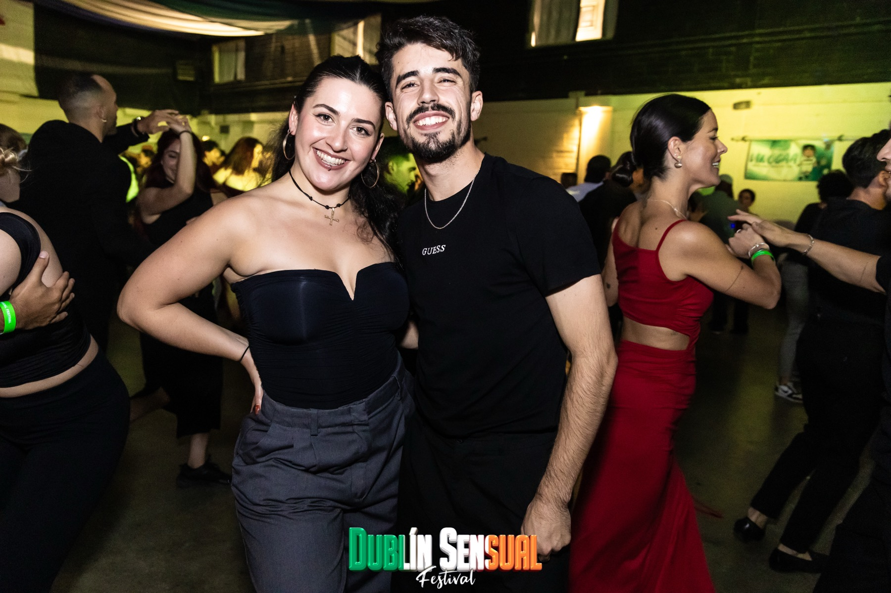
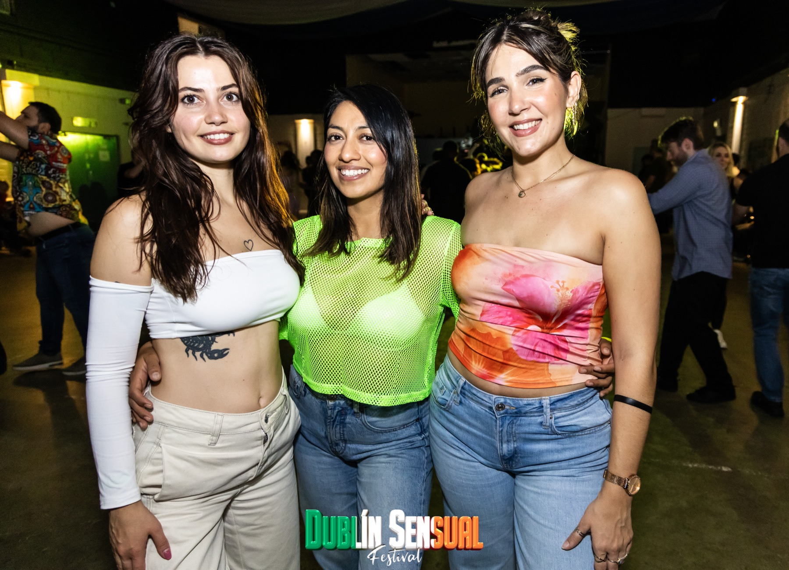

Brand visibility
- —Website and digital asset placement
- —Printed collateral where agreed
- —Appropriate on-site brand presence

Dublin Sensual brings dancers together across a four-day Halloween weekend of workshops, socials and city-centre nightlife.
We do not publish unverified audience figures. Instead, each proposal is built around the real festival format, your objectives and the placements the team can confidently deliver.

Social media features and festival communications can form part of a tailored proposal. Year-round visibility may also be discussed through the team’s weekly non-alcoholic socials.
Visit Quedadas Salseras ↗The team will shape a proposal around fit, available inventory, deliverables and budget.